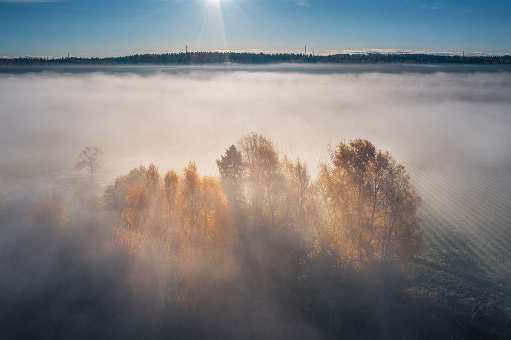

制作側の連想
「きり」から連想した、視程のものさし
店名の由来は分かりません。制作側は「きりや」という音から霧を連想し、霧の中で「どこまで見通せるか」を表す視程(してい)という言葉を借りました。このページは、遠くがぼやけた状態から少しずつ輪郭がはっきりしてくる、という見せ方になっています。お店の理念・由来とは無関係な、制作側の連想です。
ピントが合っていく4段階(イメージ)
ぼんやりから、はっきりへ。
同じ1枚の写真を、ぼかし具合を変えて並べています。お店の写真ではありません。
- 視程 20m

- 視程 100m
- 視程 500m
- 視程 1000m